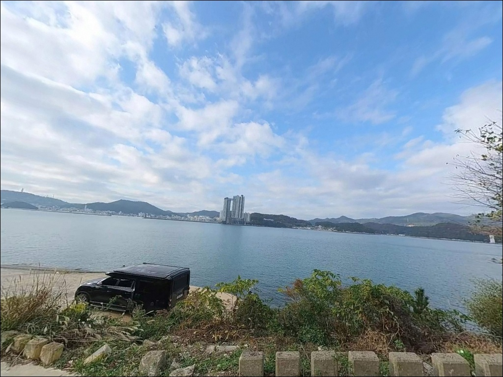
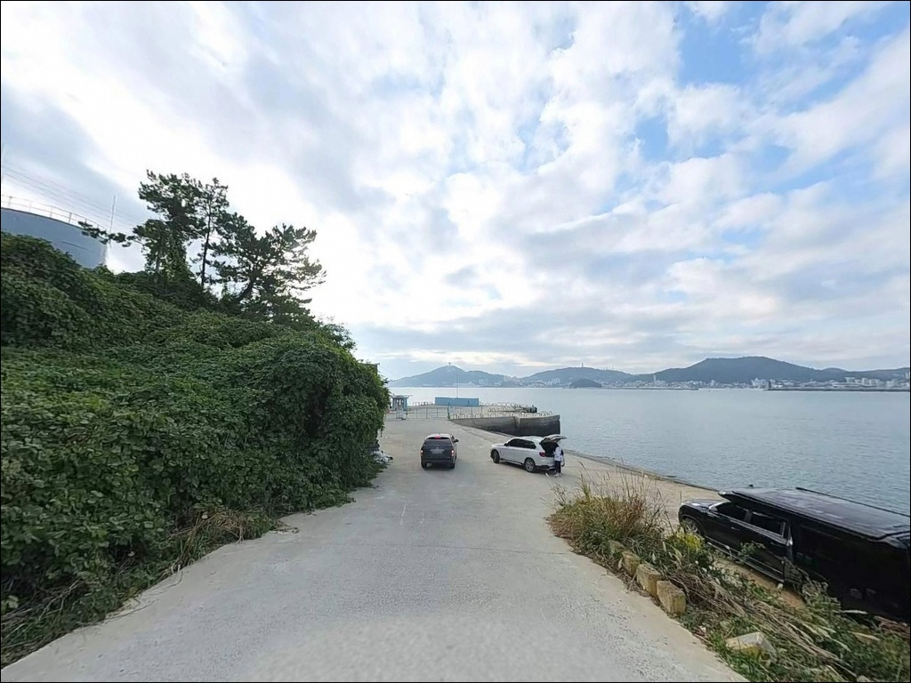
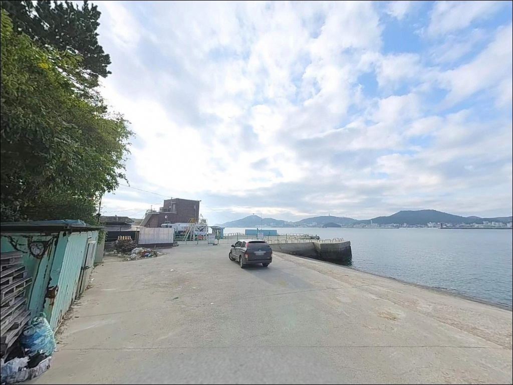
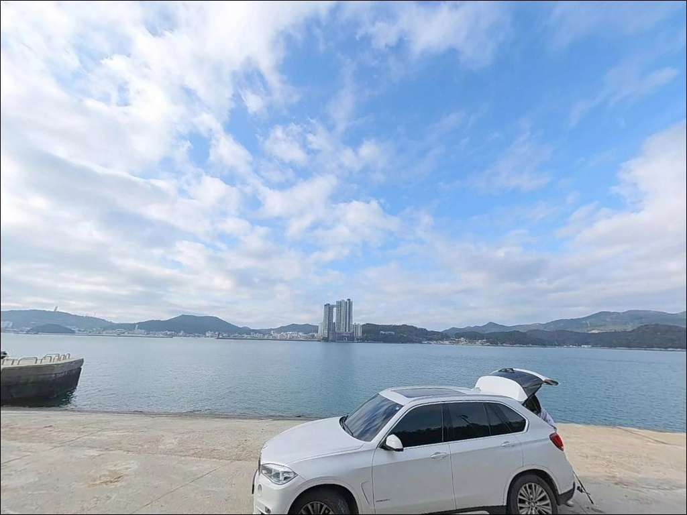
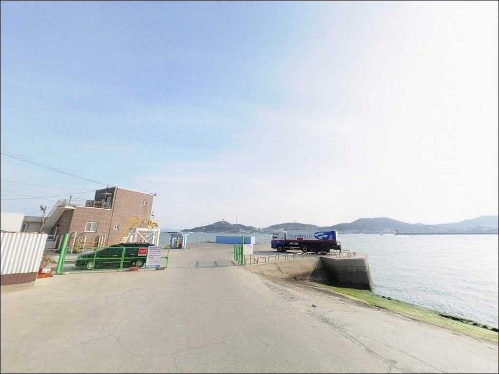
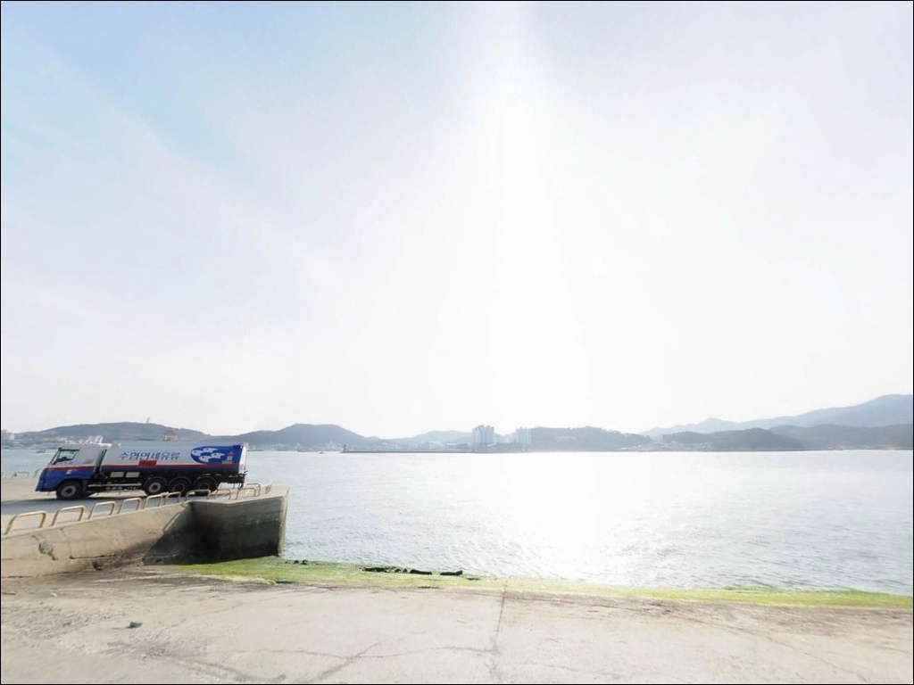
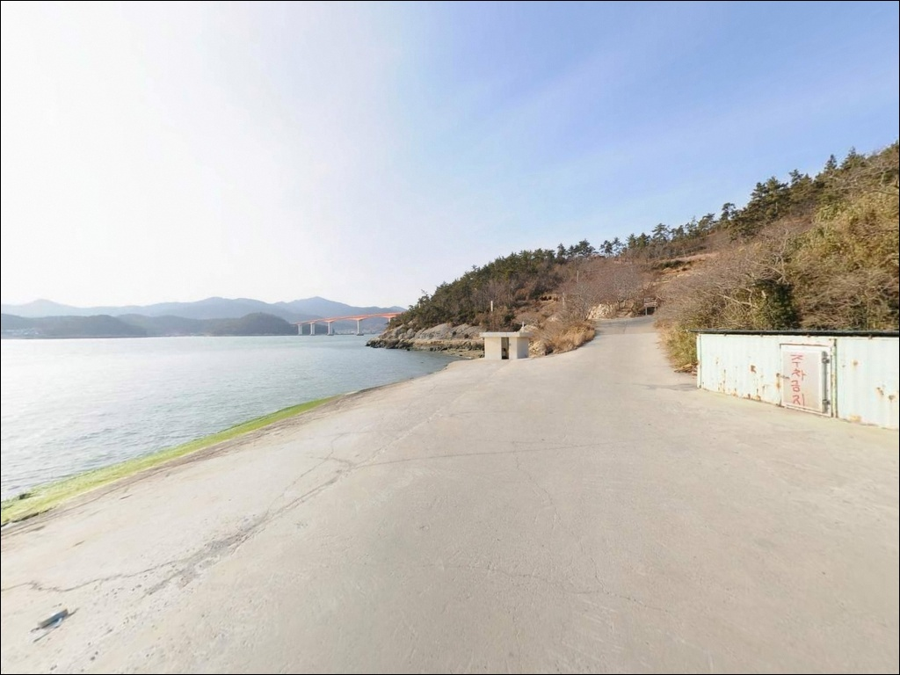
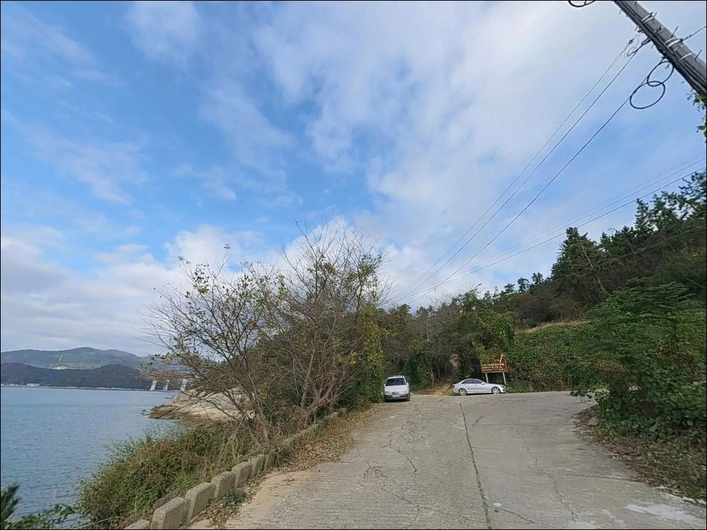

포인트 안내
강독선착장
전남 완도군 신지면 송곡리 686-6
완도 본섬과 신지도 사이 수로 구간에서
물때를 확인하지 않고 낚시를 시작하면
사리 전후 조류가 채비를 통째로 끌어당겨
어떤 방식을 써도 컨트롤이 어려워집니다.
강독선착장은 수로형 지형 특성상
조류 변화폭이 일반 방파제보다 큰 구조라,
물때 판단 없이 접근하면
낚시 가능한 시간이 크게 줄어드는 포인트입니다.
신지대교 신지도 방면 교두부에서
바로 접근할 수 있는 이 선착장은
완도 본섬과 신지도 사이 수로를 품은 형태로,
수심 있는 바닥과 꾸준한 조류 흐름 덕분에
원투·에깅·루어를 골고루 시도할 수 있는
복합 공략형 생활낚시 포인트입니다.
이 글은 강독선착장의
진입 동선, 차박 체류 조건, 지형 기반 낚시 여건,
방식별 공략 기준에 집중합니다.
조황 단정이나 특정 어종 보장은
이 글의 범위에 포함되지 않습니다.

1. 진입 동선과 포인트 접근성
강독선착장은 신지대교를 건너
신지도에 진입한 직후
북쪽 해안 방향으로 이어지는 소로를 통해
접근하는 구조입니다.
국도에서 분기하는 진입로는 포장이 되어 있고
급경사나 비포장 구간이 없어
승용차 기준 접근에 큰 어려움은 없습니다.
선착장 앞 공터가 주차 후보 구간이지만
규모가 크지 않습니다.
어선 접안 동선과 겹칠 수 있어
주차 후 자리 확인이 먼저입니다.
대형 SUV나 루프탑 텐트형 차량이라면
회차 공간이 여유롭지 않을 수 있어
출발 전 위성지도로 진입부를 확인하는 것이
현실적인 준비입니다.
선착장 자체는 소형 접안 시설 수준으로
방파제보다는 안벽·석축형 구조에 가깝습니다.
발판 폭이 넓지 않은 편이라
무거운 쿨러나 장비를 끌고 이동할 때는
동선을 사전에 파악해 두는 것이 좋습니다.

2. 차박 환경과 야간 체류 여건
강독선착장 인근은 민가 밀집도가 낮은
소규모 어촌 환경입니다.
야간에는 차량 이동이 거의 없는 편이며,
신지대교 조명이 일부 영향을 미치지만
선착장 자체 조명이 충분하지 않아
개인 헤드랜턴은 필수입니다.
선착장 주변 주차 공간은
승용차 1~2대 수용이 현실적인 수준입니다.
어선 조업이 이루어지는 시간대에는
작업 차량이 진입할 수 있으므로,
낚시를 마치고 차박으로 이어가려 한다면
어선 동선을 막지 않는 위치 선정이 먼저입니다.
본격적인 박지보다는
낚시 후 짧게 체류하는 용도로 접근하는 쪽이
이 포인트에 더 현실적입니다.
완전한 차박을 원한다면
명사십리해수욕장 인근이나
신지대교 측 주차 공간이 더 안정적인 대안입니다.


3. 주변 편의시설 및 인프라 현황
강독선착장 자체에는 공중화장실이 없습니다.
신지대교 신지도 측 휴게소(10:00~20:00)에
화장실과 매점이 있어
가장 가까운 편의 거점으로 활용할 수 있습니다.
운영 시간 이후에는 이용이 불가하므로
도착 시각 기준으로 미리 확인해 두는 것이 좋습니다.
반경 3km 이내에는
GS25 완도신지점(신지로 568)이
24시간 운영하고 있어
식수, 얼음, 간식 보충이 가능합니다.
반경 5~6km권의 명사십리주유소는
낚시용품 판매가 확인되어
에기나 소품이 부족할 때 활용할 수 있습니다.
식사 준비는 출발 전에 갖추는 것이 기본입니다.
강독선착장 주변에서 식당을 기대하기 어렵고,
송곡항 방면이나 완도읍까지 이동해야
마트와 식당이 갖춰져 있습니다.

4. 물때가 갈라놓는 강독선착장의 낚시 성패
강독선착장에서 가장 먼저 확인할 것은
바다타임 완도 기준 물때입니다.
수로형 지형은 사리 전후
조류가 강하게 형성되는 경향이 있어
채비 컨트롤이 어려워지는 시간대가 존재합니다.
조금 전후 또는 정조 전후를 기준으로
출발 시각을 맞추는 것이 기본 전략입니다.
완도 해역은 기상 변화가 빠른 편입니다.
전날 예보로 일정을 잡더라도
당일 아침 파고와 풍속을 다시 확인하는 것이
헛걸음을 막는 조건입니다.
석축·갯바위 구간이 연결된 포인트라
밑걸림 빈도가 높은 편이므로
여분 채비는 넉넉하게 준비하는 것이 좋습니다.
마을 선착장이라 어선 접안 공간이 우선입니다.
어선 출입 시간대에는
자리를 비켜 주는 것이 기본 매너이며,
야간에는 반드시 구명조끼와
헤드랜턴을 착용하고 낚시해야 합니다.

5. 지형 기반 낚시 여건 분석
강독선착장의 핵심 지형은
완도 본섬과 신지도 사이 수로를
접하는 구조입니다.
수로가 통과하는 지점에 선착장이 위치해
조류 흐름이 꾸준히 살아 있는 편이며,
수심은 4~7m 수준으로 비교적 일정합니다.
신지대교 인근 수로 구간은 조류 흐름이 꾸준히 살아 있어
원투·에깅·루어를 골고루 시도할 수 있는
복합 공략형 생활낚시 포인트입니다.
바닥은 모래와 펄이 섞인 구간과
돌·석축이 깔린 갯바위 구간이 혼재하며,
선착장 외측 방향은 수심이 빠르게 깊어지는 경향이 있어
채비를 멀리 보내는 원투형 공략과
석축 경계를 탐색하는 루어형 공략이
동시에 성립하는 구조입니다.
수로형 선착장은 사리 전후 조류가 강해지는 시간대에
채비 컨트롤이 어려워지므로,
조금 전후 타이밍 판단이 방문 성패를 가릅니다.
선착장 주변 갯바위 호안로를 따라
걸어서 이동하며 포인트를 넓히는
워킹형 탐색도 가능합니다.
최신 조황은 출조 전에 반드시 검색해 확인하시기 바랍니다.


6. 포인트에 어울리는 낚시 스타일
이 포인트에서 가장 잘 맞는 방식은
원투낚시입니다.
모래·펄 바닥이 넓게 깔린 외측 구간은
봉돌을 멀리 보내 바닥 어종을 기다리는
원투 구조에 잘 맞고,
감성돔·참돔·붕장어가 기대되는 수심을
갖추고 있습니다.
에깅과 갑오징어 루어낚시도 유효합니다.
수로 조류가 살아 있는 구간은
두족류가 조류를 타고 이동하는 길목이 되며,
인근 동일 수역에서 갑오징어 조과가 확인된 포인트라
에깅 채비를 조류 방향으로 흘리는 방식이
이 지형 조건과 잘 어울립니다.
시즌은 봄부터 가을까지 폭넓은 편입니다.
루어낚시(미노우, 지그헤드)로
농어를 노리는 워킹형 공략도 맞습니다.
선착장 주변 갯바위와 석축 경계를 따라
이동하며 탐색하는 방식이 효율적이며,
야간보다 새벽 밀물 타이밍이
농어 반응이 올라오는 구간입니다.
릴찌낚시도 이 포인트 지형과 어울립니다.
조류가 흐르는 외측 방향으로
찌를 자연스럽게 흘리는 방식이
수로형 지형 조건과 잘 맞아 떨어집니다.

7. 대안 포인트와 플랜 B 동선
강독선착장의 공간이 여의치 않거나
조류가 너무 강한 날에는
송곡선착장이 첫 번째 대안입니다.
같은 신지도 북쪽 해안선에 위치하고
동일 수역권을 공유하며,
갑오징어·두족류 낚시 포인트로
이용자 평가가 확인된 구간입니다.
신지대교를 건너 완도 본섬 방면으로
이동하면 완도읍 방파제와 어항이 있습니다.
규모가 크고 진입·주차 여건이 안정적이며
다양한 낚시 방식을 소화할 수 있어,
강독선착장을 처음 방문한다면
완도읍 방파제를 거점으로 두고
강독선착장을 병행 탐색하는 동선이 효율적입니다.
차박 여건이 더 안정적인 장소를 원한다면
명사십리해수욕장 인근이 대안입니다.
주차 공간이 넓고 기본 시설이 갖춰져 있어
강독선착장보다 훨씬 안정적인 체류가 가능하며,
신지도 낚시를 마친 뒤 이동해
하룻밤 머무는 동선으로도 잘 맞습니다.

물때와 조류만 맞으면
강독선착장은 충분히 값어치가 있습니다
원투낚시나 에깅을 즐기는 낚시인이라면
강독선착장의 수로형 지형 조건은
잘 맞는 구조입니다.
수심 있는 수로와 석축·갯바위 혼재형 바닥이
복합 공략을 가능하게 하고,
대형 포인트에 비해 낚시 인구가 많지 않아
조용하게 자리를 잡을 수 있는
생활낚시형 포인트이기도 합니다.
반면 물때를 확인하지 않거나
사리 전후에 진입하면
어떤 채비를 써도 수로 조류에 밀려
낚시 가능한 시간이 줄어드는 상황을
맞닥뜨릴 수 있습니다.
물때 확인, 여분 채비, 완전 자급 준비,
이 세 가지를 갖추고 가면
신지도 초입에서 제대로 된 포인트를
하나 확보하는 결과가 됩니다.
낚시를 마친 뒤 조용한 어촌 환경에서
잠시 차박으로 이어가는 낚시 여행자라면,
신지대교 너머 완도의 다음 포인트로 넘어가기 전
한 번쯤 묵어갈 만한 코스입니다.